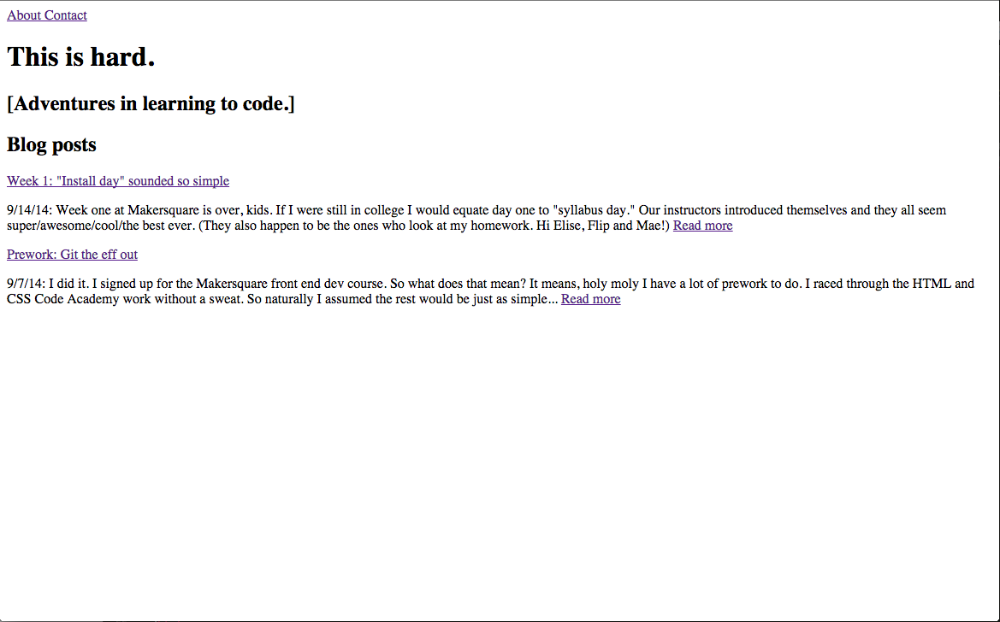

Week one at Makersquare is over, kids. If I were still in college I would equate day one to "syllabus day." Our instructors introduced themselves and they all seem super/awesome/cool/the best ever. (They also happen to be the ones who look at my homework. Hi Elise, Flip and Mae!)
And then we dove into installing. Sounds simple, yes. But I forgot to mention we were installing through terminal and terminal makes my brain hurt. First you install XCode, then you type a bunch of commands straight up into terminal. After a little assistance (okay, a lot of assistance) from Flip, I was up and running. It also didn't hurt that I already had some of the things installed from Springbox coding class.
On day two we dove even further into command line and Git, this blog is now saved on Git using terminal. (I have no idea if I'm using that terminology correctly, but I'm doing it anyway.) We started our blogs in class and now I'm finishing and committing from home. It's only been a few days, but this is definitely starting to feel a bit more natural. But I say all of this before I attempt to commit and push myself. Wish me luck!
I've also decided to use the look/style of my blog to illustrate how much I've learned. So here's week 1:
What I'm hoping to learn next week? How about how to make this blog look better...